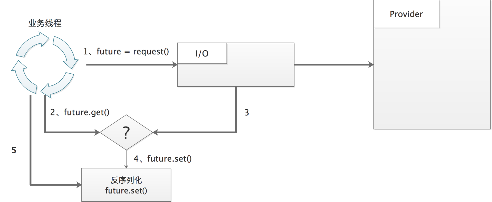
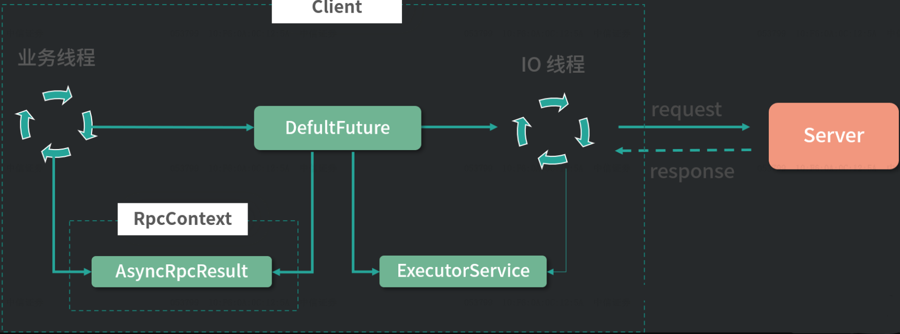

服务加载机制SPI服务发现SPI机制优势SPI机制实现类加载类组装客户端服务请求完整流程服务代理发起请求同步请求流程异步请求流程发起请求入口线程模型请求编码服务端服务响应请求解码服务调用客户端获取结果响应解码唤醒消费者
服务加载机制
SPI服务发现
SPI(Service Provider Interface)机制通过将接口实现类的全限定名配置在META-INF/dubbo文件中，并由服务加载器读取配置文件，加载接口实现类，动态为接口替换实现类，增强扩展能力。dubbo使用增强的Dubbo SPI机制，可以配置和按需加载指定的实现类。同时具备IOC、AOP能力：具备IOC能力：如果某扩展类属性依赖其他对象，则会自动完成该依赖对象的注入；
具备AOP能力：自动发现扩展类的包装类，完成包装类的构造，使用包装类替代原始类别返回。
SPI机制实例：首先定义接口及其实现类
xxxxxxxxxx221// 服务接口2// org.apache.dubbo.springboot.demo34public interface Payment {5void pay(double amount);6}7// 具体实现alipay8// org.apache.dubbo.springboot.demo.impl.AlipayPayment9public class .AlipayPayment implements Payment {1011public void pay(double amount) {12System.out.println("Paying " + amount + " using Alipay");13}14}15// 具体实现wechatpay16// org.apache.dubbo.springboot.demo.impl.WeChatPayPayment17public class WeChatPayPayment implements Payment {1819public void pay(double amount) {20System.out.println("Paying " + amount + " using WeChatPay");21}22}之后将实现类信息配置在
META-INF/dubbo目录下，以接口全限定名命名的文件中xxxxxxxxxx21alipay=org.apache.dubbo.springboot.demo.consumer.impl.AlipayPayment2wechatpay=org.apache.dubbo.springboot.demo.consumer.impl.WeChatPayPayment在使用时手动指定需要加载的实现类，完成服务调用
xxxxxxxxxx91public class PaymentClient {2public static void main(String[] args) {3ExtensionLoader<Payment> loader = ExtensionLoader.getExtensionLoader(Payment.class);4Payment alipay = loader.getExtension("alipay");5alipay.pay(100);6Payment wechatPay = loader.getExtension("wechatpay");7wechatPay.pay(100);8}9}
SPI机制优势
相较于使用CGLIB或JDK Proxy生成服务的动态代理机制，
SPI方式可以根据需要，通过修改配置文件，自动动态加载不同的服务实现，切换实现类无需修改代码；自动完成扩展对象的实例化和属性自动装配，无需手动处理；
通过
ExtensionLoader统一管理所有扩展点，更加灵活和易于管理。
SPI机制实现
通过
ExtensionLoader#getExtension(name)方法获取服务实列时，将触发类加载和实例化，得到服务实例。在获取实例对象时，由于服务实例是单例的，双检查通过后，触发类加载和实例化。xxxxxxxxxx191// ExtensionLoader#getExtension2// 根据服务名，获取配置文件中该服务名对应单例服务对象3public T getExtension(String name, boolean wrap) {4// 持有目标对象5final Holder<Object> holder = getOrCreateHolder(cacheKey);6Object instance = holder.get();7// 双检测通过后，触发实例创建8if (instance == null) {9synchronized (holder) {10instance = holder.get();11if (instance == null) {12// 创建拓展实例13instance = createExtension(name, wrap);14holder.set(instance);15}16}17}18return (T) instance;19}
类加载
创建实例时，首先触发类加载，到配置文件
META-INF/dubbo读取服务实例列表，根据服务实例名称获得对应的Class对象。为了避免同一个类被重复加载，同样使用了双检查机制。xxxxxxxxxx371// ExtensionLoader#getExtensionClasses2// 根据配置文件解析出服务名称到服务类全限定类名映射关系表3private Map<String, Class<?>> getExtensionClasses() {4Map<String, Class<?>> classes = cachedClasses.get();5// 双重检查，防止重复加载6if (classes == null) {7synchronized (cachedClasses) {8classes = cachedClasses.get();9if (classes == null) {10// 触发加载服务Class对象11classes = loadExtensionClasses();12cachedClasses.set(classes);13}14}15}16return classes;17}1819// ExtensionLoader#loadResource20// 根据配置文件，获取服务对象Class对象，本方法位于loadExtensionClasses调用链路下游21private void loadResource(ClassLoader classLoader,java.net.URL resourceURL) {22// 获取配置文件内容23List<String> newContentList = getResourceContent(resourceURL);24String clazz;25for (String line : newContentList) {26String name = null;27int i = line.indexOf('=');28// 实例名称29name = line.substring(0, i).trim();30// 实例全限定类名31clazz = line.substring(i + 1).trim();32// 加载服务实例class，并通过loadClass方法对类进行缓存33loadClass(classLoader,extensionClasses,resourceURL,Class.forName(clazz, true, classLoader),name,overridden);34}35}36}37}
类组装
获得服务实例
Class对象后，将通过反射创建对象，并执行前置、后置处理器，再通过反射获取所有setXXX方法，自动注入依赖，实现IOC特性支持，最后完成包装类创建，并注入当前服务实例，完成AOP特性支持，最终得到指定的服务实例。xxxxxxxxxx301// ExtensionLoader#createExtension2// 实例化、初始化服务对象3private T createExtension(String name, boolean wrap) {4// 从配置文件中加载所有的拓展类，得到“配置项名称”到“配置类”的映射关系表5Class<?> clazz = getExtensionClasses().get(name);6// 尝试根据Class信息获取服务实例对象，如果不存在则通过反射获取构造器创建对象7extensionInstances.putIfAbsent(clazz, createExtensionInstance(clazz));8instance = (T) extensionInstances.get(clazz);910// 进行前置初始化，类似Spring的postProcessBeforeInitialization，默认无操作11instance = postProcessBeforeInitialization(instance, name);12// IOC特性：通过反射获取"setXXX"方法，再通过反射调用setter方法设置依赖13injectExtension(instance);14// 进行后置初始化，类似Spring的postProcessAfterInitialization，默认无操作15instance = postProcessAfterInitialization(instance, name);1617// AOP特性：如果实列存在包装类，初始化包装类并返回18for (Class<?> wrapperClass : wrapperClassesList) {19Wrapper wrapper = wrapperClass.getAnnotation(Wrapper.class);20boolean match = xxx;21if (match) {22// 将当前instance作为参数传给Wrapper构造方法，通过反射创建Wrapper实例，然后向Wrapper实例中注入依赖23instance = injectExtension(24(T) wrapperClass.getConstructor(type).newInstance(instance));25// 后置处理器26instance = postProcessAfterInitialization(instance, name);27}28}29return instance;30}
客户端服务请求
完整流程

当消费者通过dubbo远程调用生产者提供服务时，整个远程服务调用可分为：
->消费者通过代理对象
Proxy发起远程调用；->网络客户端
Client将编码后的请求发送给服务提供方Server；->
Server收到请求后对数据包解码，将解码后的请求发送至分发器Dispatcher，将请求派发到指定的线程池；->在线程池中执行请求的服务。
假设服务接口定义为
xxxxxxxxxx31public interface HelloService {2public String sayHello(String name);3}服务端拥有该接口的实现，并通过
@DubboService注解，将服务注册到nacos中xxxxxxxxxx712public class HelloServiceImpl implements HelloService {34public String sayHello(String name) {5return "Hello " + name;6}7}客户端通过注解
@DubboReference，从nacos中获得远程服务的代理，可以通过该代理完成远程服务调用xxxxxxxxxx41public class Task {23private HelloService helloService;4}
服务代理
dubbo使用Javassist框架为服务接口生成动态代理类，用以和消费者交互，以HelloService为例，通过arthas反编译得到生成的代理类xxxxxxxxxx181public class HelloServiceDubboProxy0 implements ClassGenerator.DC,EchoService,Destroyable,HelloService {2// 接口的方法数组3public static Method[] methods;4// 请求处理执行方5private InvocationHandler handler;6public HelloServiceDubboProxy0(InvocationHandler invocationHandler) {7this.handler = invocationHandler;8}910// 执行服务调用11public String sayHello(String string) {12Object[] objectArray = new Object[]{string};13// 调用 InvocationHandler 实现类的 invoke 方法得到调用结果14Object object = this.handler.invoke(this, methods[0], objectArray);15return (String)object;16}17// somecode18}InvocationHandler#invoke及进入InvokerInvocationHandler#invoke方法，将请求的服务名称、方法名称、方法参数类型、方法实参构建RpcInvocation对象，进入请求的发送流程xxxxxxxxxx141// InvokerInvocationHandler#invoke2// 包装远程调用请求，发往下游进行请求发送3public Object invoke(Object proxy, Method method, Object[] args) throws Throwable {4// 包装远程调用请求5RpcInvocation rpcInvocation = new RpcInvocation(6serviceModel,7method.getName(),8invoker.getInterface().getName(),9protocolServiceKey,10method.getParameterTypes(),11args);12// 发往下游进行请求发送13return InvocationUtil.invoke(invoker, rpcInvocation);14}
发起请求
dubbo支持同步请求和异步请求。对于同步请求，消费者线程间柱塞，直至请求的响应到来；对于异步请求，发起请求后，消费者线程将不会柱塞，响应到来后支持线程将处理响应数据。同步请求和异步请求的区别在于，执行等待响应及响应数据反序列化的线程不同。
同步请求流程

消费者发出请求，立即拿到
CompletableFuture对象，不会在发送方法处阻塞；消费者线程自动调用
ThreadlessExecutor.waitAndDrain()，在线程池任务队列上等待任务到来，此时消费者线程阻塞；当收到响应时，IO线程完成响应头反序列化，并生成响应数据部分反序列化任务，填充到
ThreadlessExecutor任务队列中；线程池中任务将由消费者线程执行，得到业务结果之后，调用
Future.set()方法进行设置，之后waitAndDrain()方法返回；消费者线程从
Future中拿到结果值。
异步请求流程
消费者发出请求，立即拿到
CompletableFuture对象，不会在发送方法处阻塞；直接返回
CompletableFuture对象，此时消费者线程不会阻塞；当收到响应时，IO 线程完成响应头反序列化，并生成响应数据部分反序列化任务提交到该请求对应的共享线程池中；
数据部分反序列化任务完成后，调用
Future.set()方法进行设置，并唤醒等待在CompletableFuture上线程，执行回调；消费者线程从
Future中拿到结果值。
发起请求入口
发起请求将由
AbstractInvoker#invoke方法开始执行，该发送方法为异步发送，在发出请求后，立即拿到AsyncRpcResult对象，表示未完成的异步请求结果，消费者线程间不会在发送方法处阻塞。之后根据请求是否是同步请求，决定是否在
AsyncRpcResult上等待响应到来。如果是同步请求，消费者线程将阻塞，直至响应到来；如果是异步请求，将直接返回，不必等待。1// AbstractInvoker#invoke2// 执行发送请求流程3public Result invoke(Invocation inv) throws RpcException {4RpcInvocation invocation = (RpcInvocation) inv;5prepareInvocation(invocation);6// 发送请求并获得异步返回值7AsyncRpcResult asyncResult = doInvokeAndReturn(invocation);8// 如果是同步请求，将等待响应到来再返回9waitForResultIfSync(asyncResult, invocation);10return asyncResult;11}12// AbstractInvoker#doInvokeAndReturn13// 发送请求并获得异步返回值14private AsyncRpcResult doInvokeAndReturn(RpcInvocation invocation) {15AsyncRpcResult asyncResult = (AsyncRpcResult) doInvoke(invocation);16return asyncResult;17}发送请求之后的
AbstractInvoker#doInvokeAndReturn方法，将调用AbstractInvoker#doInvoke抽象方法，该方法具体由子类实现，不同的RPC协议对应不同的AbstractInvoker实现类。下面以dobbo协议的DubboInvoker为例：如果是单向通信，直接将
Invocation包装成oneway类型的请求发送，并立即返回内容为空的RpcResult，将不会有线程等待调用返回；
如果是双向通信，将获取用于执行等待响应到来任务的线程池
executor，并创建DefaultFuture，表示异步响应，executor中线程在DefaultFuture上等待响应返回，并执行回调等逻辑。然后DefaultFuture会被封装成AsyncRpcResult并立即返回，发送过程异步实现，不会在发送处柱塞。
x
1// Dubbo协议对应的AbstractInvoker实现类2public class DubboInvoker<T> extends AbstractInvoker<T> {3// 异步发送请求，并获得异步返回值包装类4protected Result doInvoke(final Invocation invocation) throws Throwable {5RpcInvocation inv = (RpcInvocation) invocation;6// 是否单向通信，不关心调用是否成功与返回值7boolean isOneway = RpcUtils.isOneway(getUrl(), invocation);8// 异步无返回值9if (isOneway) {10boolean isSent = getUrl().getMethodParameter(methodName, Constants.SENT_KEY, false);11request.setTwoWay(false);12// 直接将Invocation包装成oneway类型的Request发送出去，不会创建DefaultFuture13currentClient.send(request, isSent);14// 返回异步默认RpcResult15return AsyncRpcResult.newDefaultAsyncResult(invocation);16} else {17// 异步有返回值18request.setTwoWay(true);19// 设置执行等待响应到来任务的线程池，同步和异步请求的线程池将不同20ExecutorService executor = getCallbackExecutor(getUrl(), inv);21// 创建请求的DefaultFuture对象，executor中线程将在DefaultFuture上等待响应返回，并执行回调22CompletableFuture<AppResponse> appResponseFuture =23currentClient.request(request, timeout, executor).thenApply(AppResponse.class::cast);24// 将AppResponse封装成AsyncRpcResult返回25AsyncRpcResult result = new AsyncRpcResult(appResponseFuture, inv);26result.setExecutor(executor);27return result;28}29}30}
DefaultFuture继承JDK中的CompletableFuture，示未完成的请求结果。内部维护
CHANNELS，用于管理请求与Channe之间关联，以及FUTURES用于管理请求与DefaultFuture之间关联。初始化对象时，将完成请求信息存储，并创建定时到期检测任务。创建
DefaultFuture对象时，可从传入的Request对象中，获取调用编号，并将<reqId, DefaultFuture>映射关系存入到静态FUTURES中，便于在异步发送模式下，后续响应到来后，通过调用编号，找到请求对应的DefaultFuture。xxxxxxxxxx141public class DefaultFuture extends CompletableFuture<Object> {2// 请求与`Channe`之间关联3private static final Map<Long, Channel> CHANNELS = new ConcurrentHashMap<>();4// 请求与`DefaultFuture`之间关联5private static final Map<Long, DefaultFuture> FUTURES = new ConcurrentHashMap<>();6// 请求ID与请求本身7private final Long id;8private final Request request;9private final Channel channel;10// 请求关联的线程池11private ExecutorService executor;12// 定时到期检测任务13private Timeout timeoutCheckTask;14}
线程模型
发送请求的
doInvoke方法异步执行，但消费者可以选择同步或者异步发送请求。dubbo通过使用不同的用于等待响应到来任务的线程池参数，实现消费者端的同步和异步发送。doInvoke中获取线程池的方法getCallbackExecutor的InvokeMode可分为：SYNC(默认调用模式)、ASYNC和FUTURE。SYNC模式下将返回ThreadlessExecutor线程池，另外两种调用模式属于异步调用模式，会根据URL选择对应的共享线程池。xxxxxxxxxx111// AbstractInvoker#getCallbackExecutor2// 根据请求模式获取请求执行等待及回调的线程池3protected ExecutorService getCallbackExecutor(URL url, Invocation inv) {4// 同步调用5if (InvokeMode.SYNC == RpcUtils.getInvokeMode(getUrl(), inv)) {6return new ThreadlessExecutor();7}8// 异步调用9return ExecutorRepository.getInstance(url.getOrDefaultApplicationModel())10.getExecutor(url);11}其中
ThreadlessExecutor是一种特殊线程池，其内部不管理任何线程。当执行execute方法时，只是将任务存储在任务队列中，不会被调度到任何线程执行。当其他线程调用ThreadlessExecutor.waitAndDrain()方法等待并执行任务时，将由调用waitAndDrain()方法的线程执行队列中任务。xxxxxxxxxx361public class ThreadlessExecutor extends AbstractExecutorService {2// 存储提交的任务3private final Queue<Runnable> queue = new ConcurrentLinkedQueue<>();4// 保存正在等待任务的线程5private final AtomicReference<Object> waiter = new AtomicReference<>();67// 在指定的时间内等待任务的到来，并执行队列中的所有任务8public void waitAndDrain(long deadline) throws InterruptedException {9Runnable runnable = queue.poll();10// 等待任务到来或超时11while ((runnable = queue.poll()) == null && waiter.get() == Thread.currentThread()) {12long restTime = deadline - System.nanoTime();13if (restTime <= 0) {14return;15}16// 让线程等待一段时间，直到任务到来或超时17LockSupport.parkNanos(this, restTime);18}19// 循环执行队列中的任务，直到队列为空20do {21if (runnable != null) {22runnable.run();23}24} while ((runnable = queue.poll()) != null);25}2627// 提交任务到任务队列2829public void execute(Runnable runnable) {30// 将提交的任务封装成RunnableWrapper对象，并添加到队列31RunnableWrapper run = new RunnableWrapper(runnable);32queue.add(run);33// 唤醒正在等待任务的线程34LockSupport.unpark((Thread) waiter.get());35}36}

当完成请求发送后，得到异步请求结果
AsyncRpcResult，表示未完成的RPC请求。之后将返回AbstractInvoker#invoke继续执行AbstractInvoker#waitForResultIfSync方法，等待请求到来。如果是异步请求，将直接返回，不必等待；如果是同步请求，由消费者线程直接调用
AsyncRpcResult#get方式柱塞消费者线程，直至获得请求结果。1// AbstractInvoker#waitForResultIfSync2// 等待请求到来3private void waitForResultIfSync(AsyncRpcResult asyncResult, RpcInvocation invocation) {4// 如果是异步请求，将直接返回，不必等待5if (InvokeMode.SYNC != invocation.getInvokeMode()) {6return;7}8Object timeoutKey = invocation.getObjectAttachmentWithoutConvert(TIMEOUT_KEY);9long timeout = RpcUtils.convertToNumber(timeoutKey, Integer.MAX_VALUE);10// 如果是同步请求，将在Future上等待响应到来再返回11asyncResult.get(timeout, TimeUnit.MILLISECONDS);12}13}同步请求在发送请求后，将在
AsyncRpcResult#get中使用ThreadlessExecutor执行等待响应到来的任务，即是消费者线程执行等待任务，消费者线程将被阻塞，直至响应到来，之后在CompletableFuture上获取响应结果并返回；异步请求时，一般由消费者使用
CompletableFuture设置回调，由线程池线程执行AsyncRpcResult#get方法，消费者线程不会阻塞。xxxxxxxxxx181public class AsyncRpcResult implements Result {2// 等待请求返回及执行回调的线程池3private Executor executor;4// 阻塞当前线程，等待响应到来5public Result get() throws InterruptedException, ExecutionException {6// 同步调用方式等待响应到来7if (executor instanceof ThreadlessExecutor) {8ThreadlessExecutor threadlessExecutor = (ThreadlessExecutor) executor;9// 检测调用结果是否返回10while (!responseFuture.isDone() && !threadlessExecutor.isShutdown()) {11// ThreadlessExecutor.waitAndDrain()方法将柱塞当前线程，同步等待12threadlessExecutor.waitAndDrain(Long.MAX_VALUE);13}14}15// 结束阻塞或者异步请求，获取响应16return responseFuture.get();17}18}
请求编码

发送请求的ExchangeClient#request方法执行消息编码，在编码后再发送出去。
数据包分为消息头和消息体。消息头用于存储元信息：魔数、数据包类型（Request/Response）、调用方式(单向调用/双向调用)、序列化器、请求编号、消息体长度；消息体中用于存储具体的调用消息：服务名、服务版本、方法名、参数列表。
消息头将通过
ExchangeCodec#encodeRequest方法编码后以NIO的方式写入请求数据，消息实参通过DubboCodec#encodeRequestData方法使用第三方序列化组件完成编码。xxxxxxxxxx261// DubboCodec#encodeRequestData2// 对消息头和消息体编码3protected void encodeRequestData(Channel channel, ObjectOutput out, Object data, String version)4throws IOException {5RpcInvocation inv = (RpcInvocation) data;6// 要请求的服务名和版本7out.writeUTF(version);8String serviceName = inv.getAttachment(INTERFACE_KEY);9if (serviceName == null) {10serviceName = inv.getAttachment(PATH_KEY);11}12out.writeUTF(serviceName);13out.writeUTF(inv.getAttachment(VERSION_KEY));14// 服务的方法和参数列表15out.writeUTF(inv.getMethodName());16out.writeUTF(inv.getParameterTypesDesc());17Object[] args = inv.getArguments();18if (args != null) {19for (int i = 0; i < args.length; i++) {20// 使用序列化组件对消息实参进行序列化21out.writeObject(callbackServiceCodec.encodeInvocationArgument(channel, inv, i));22}23}24out.writeAttachments(inv.getObjectAttachments());25}26
服务端服务响应
请求解码
服务端收到请求后，在
ExchangeCodec#decode中，将通过检测消息头中的魔数是否与规定的魔数相等，以及收到数据长度是否和请求头中说明的请求头相等，提前拦截掉非常规数据包。最后调
DecodeableRpcInvocation#decode进行后续的解码工作，得到服务方法名、调用参数列表，最终获得完整请求request对象。xxxxxxxxxx211// DecodeableRpcInvocation#decode2// 对请求解码3public Object decode(Channel channel, InputStream input) throws IOException {4// 获得服务路径、版本、方法、参数类型5String path = in.readUTF();6setAttachment(PATH_KEY, path);7String version = in.readUTF();8setAttachment(VERSION_KEY, version);9String keyWithoutGroup = keyWithoutGroup(path, version);10checkPayload(keyWithoutGroup);11setMethodName(in.readUTF());12String desc = in.readUTF();13setParameterTypesDesc(desc);14// somecode15// 设置参数类型数组16setParameterTypes(pts);17// 解析运行时参数18decodeArgument(channel, pts, args);19return this;20}21
服务调用
AllChannelHandler作为响应请求的入口，将消费者请求对象Request封装到ChannelEventRunnable中，dubbo根据不同任务分发策略，依据请求类型，决定ChannelEventRunnable由任务提交线程即当前IO线程执行，还是提交到线程池执行。策略 用途 all 所有消息都派发到线程池，包括请求，响应，连接事件，断开事件等。默认分发策略 direct 所有消息都不派发到线程池，全部在 IO 线程上直接执行 message 只有请求和响应消息派发到线程池，其它消息均在 IO 线程上执行 execution 只有请求消息派发到线程池，不含响应。其它消息均在 IO 线程上执行 connection 在 IO 线程上，将连接断开事件放入队列，有序逐个执行，其它消息派发到线程池 在
ChannelEventRunnable在被线程池中被调度执行时，先完成对请求数据的解码，然后执行HeaderExchangeHandler#received，执行后续服务调用逻辑。xxxxxxxxxx361// HeaderExchangeHandler#received2// 处理服务调用3public void received(Channel channel, Object message) throws RemotingException {4final ExchangeChannel exchangeChannel = HeaderExchangeChannel.getOrAddChannel(channel);5if (message instanceof Request) {6// 处理请求对象7Request request = (Request) message;8// 双向通信9if (request.isTwoWay()) {10// 向后调用服务，并返回调用结果，关注调用结果并形成 Response 返回给客户端11handleRequest(exchangeChannel, request);12} else {13// 单向通信，直接交给上层的 DubboProtocol.requestHandler，不会返回任何 Response。14handler.received(exchangeChannel, request.getData());15}16}17}18// HeaderExchangeHandler#handleRequest19// 处理服务调用20void handleRequest(final ExchangeChannel channel, Request req) throws RemotingException {21// 响应对象22Response res = new Response(req.getId(), req.getVersion());23// 获取 RpcInvocation 对象24Object msg = req.getData();25// 异步执行结果26CompletionStage<Object> future = handler.reply(channel, msg);27// 请求处理完成后回调28future.whenComplete((appResult, t) -> {29// 设置请求处理状态30res.setStatus(Response.OK);31// 设置调用结果32res.setResult(appResult);33// 发送请求响应34channel.send(res);35});36}服务端服务实例对象被封装成
DubboInvoker对象，DubboInvoker是AbstractInvoker的实现类，实现自己的doInvoke方法。当服务端收到请求时，从导出服务容器exporterMap中取出请求的DubboInvoker，并调用invoke()处理请求。1// DubboProtocol#ExchangeHandlerAdapter#reply2// 回复请求3public CompletableFuture<Object> reply(ExchangeChannel channel, Object message) throws RemotingException {4Invocation inv = (Invocation) message;5// 从导出服务容器`exporterMap `中获取 Invoker 实例6Invoker<?> invoker = inv.getInvoker() == null ? getInvoker(channel, inv) : inv.getInvoker();7RpcContext.getServiceContext().setRemoteAddress(channel.getRemoteAddress());8// 通过 Invoker 调用具体的服务9Result result = invoker.invoke(inv);10return result.thenApply(Function.identity());11}1213// DubboProtocol#getInvoker14// 获取请求服务对用的Invoker15Invoker<?> getInvoker(Channel channel, Invocation inv) throws RemotingException {16// 计算 service key，格式为 groupName/serviceName:serviceVersion:port17String serviceKey = serviceKey(port, path, (String) inv.getObjectAttachmentWithoutConvert(VERSION_KEY), (String)18inv.getObjectAttachmentWithoutConvert(GROUP_KEY));19// 从 exporterMap 查找与 serviceKey 相对应的 DubboExporter 对象，20DubboExporter<?> exporter = (DubboExporter<?>) exporterMap.get(serviceKey);21Invoker<?> invoker = exporter.getInvoker();22inv.setServiceModel(invoker.getUrl().getServiceModel());23return invoker;24}执行请求响应的
Invoker#invoke方法定义在AbstractProxyInvoker中，执行服务调用，并构建异步请求响应。xxxxxxxxxx141// AbstractProxyInvoker#invoke2// 执行服务调用，并构建有异步请求响应3public Result invoke(Invocation invocation) throws RpcException {4// 调用 doInvoke 执行后续的调用5Object value = doInvoke(6proxy, invocation.getMethodName(), invocation.getParameterTypes(), invocation.getArguments());7// 构建有异步请求响应8CompletableFuture<Object> future = wrapWithFuture(value, invocation);9CompletableFuture<AppResponse> appResponseFuture = future.handle((obj, t) -> {10result.setValue(obj);11return result;12});13return new AsyncRpcResult(appResponseFuture, invocation);14}AbstractProxyInvoker#doInvoke是一个抽象方法，由具体的Invoker实例实现，而Invoker实例是在运行时通过JavassistProxyFactory动态创建。在getInvoker方法中将创建具备doInvoke方法的Invoker。1// JavassistProxyFactory#getInvoker2// 创建具备`doInvoke`方法的`Invoker`3public <T> Invoker<T> getInvoker(T proxy, Class<T> type, URL url) {4// 创建匿名类对象5final Wrapper wrapper =6Wrapper.getWrapper(proxy.getClass().getName().indexOf('$') < 0 ? proxy.getClass() : type);7return new AbstractProxyInvoker<T>(proxy, type, url) {89protected Object doInvoke(T proxy, String methodName, Class<?>[] parameterTypes, Object[] arguments)10throws Throwable {11// 调用 wrapper.invokeMethod 方法进行真正的服务调用12return wrapper.invokeMethod(proxy, methodName, parameterTypes, arguments);13}14};15}16}doInvoke方法中实际上使用了Wrapper.invokeMethod去真正执行服务调用，Wrapper是一个抽象类，其中invokeMethod是一个抽象方法。Dubbo会在运行时通过Javassist框架为Wrapper生成实现类，并实现invokeMethod方法，在方法中根据请求信息找到并调用具体的服务。以`HelloServiceImpl为例，Javassist为其生成的Wrapper#invokeMethod如下xxxxxxxxxx121// Wrapper#invokeMethod2// 根据请求信息找到并调用具体的服务3public Object invokeMethod(Object object, String string, Class[] arrclass, Object[] arrobject) throws InvocationTargetException {4// 具体要被调用的服务5HelloService helloService;6helloService = (HelloService)object;7// 根据方法名调用指定的方法8if ("sayHello".equals(string) && arrclass.length == 1) {9// 真正的调用服务10return helloService.sayHello((String)arrobject[0]);11}12}
客户端获取结果
响应解码
服务提供方调用指定服务后，会调用结果封装到
Response对象中，并将该对象返回给服务消费方。服务消费方在收到响应数据后，首先对响应数据的数据头进行解码，并将待解码的数据体转换得到DecodeableRpcResult对象(不在IO线程完成数据体的解码是为了防止IO线程被柱塞)，向下游传递Response对象。xxxxxxxxxx111// DubboCodec2protected Object decodeBody(Channel channel, InputStream is, byte[] header){3// 解码响应数据头，得到请求编号4long id = Bytes.bytes2long(header, 4);5Response res = new Response(id);6// 响应数据部分待解码，由线程池中由线程池中线程完结解码，防止IO线程被柱塞7DecodeableRpcResult result=xxx;8data = result;9res.setResult(data);10return res;11}当响应到来时，消费者侧管道
Channel就绪，可以进行数据读取，触发AllChannelHandler#received方法，将后续ChannelHandler.received方法的调用封装成任务，提交到与该请求对应的DefaultFuture内部的线程池中。在后续处理中由该响应对应的线程池，完成响应数据的解码，并将结果放入该响应对应的
DefaultFuture。x
1// AllChannelHandler#received2// 将后续`ChannelHandler.received`方法的调用封装成任务提交到线程池3public void received(Channel channel, Object message) throws RemotingException {4ExecutorService executor = getPreferredExecutorService(message);5executor.execute(new ChannelEventRunnable(channel, handler,6}7}8// WrappedChannelHandler#getPreferredExecutorService9// 获取执行ChannelHandler.received任务的线程池10public ExecutorService getPreferredExecutorService(Object msg) {11if (msg instanceof Response) {12Response response = (Response) msg;13// 获取当前响应对应请求的DefaultFuture，返回其内部的ExecutorService14DefaultFuture responseFuture = DefaultFuture.getFuture(response.getId());15ExecutorService executor = responseFuture.getExecutor();16return executor;17} else {18return getSharedExecutorService(msg);19}20}
唤醒消费者

发送请求时，得到
DefaultFuture对象表示未完成的请求结果，DefaultFuture对象可从传入的Request对象中，获取调用编号，并将<reqId, DefaultFuture>映射关系存入到静态Map中。在收到
Response对象后，根据Response对象中的调用编号到FUTURES集合中取出相应的DefaultFuture对象，唤醒柱塞在DefaultFuture#get上的线程。xxxxxxxxxx121public class DefaultFuture extends CompletableFuture<Object> {2private static final Map<Long, DefaultFuture> FUTURES = new ConcurrentHashMap<>();3// 获得响应对应的请求，唤醒等待线程4public static void received(Channel channel, Response response, boolean timeout) {5// 根据调用编号从 FUTURES 集合中查找指定的 DefaultFuture 对象6// 服务消费方的线程池会收到多个响应对象，通过编号，将响应发送给正确的请求方7DefaultFuture future = FUTURES.remove(response.getId());8// 唤醒柱塞在`DefaultFuture#get`上的线程9future.doReceived(response);10shutdownExecutorIfNeeded(future);11}12}
DefaultFuture继承JDK中的CompletableFuture，DefaultFuture#doReceived方法将调用CompletableFuture#postComplete用于唤醒阻塞线程。postComplete工作流程较为复杂，可以简单概述其流程为：将任务间依赖关系构建为一颗多叉树，
CompletableFuture中的stack字段，保存依赖该任务完成的后续任务，可以将其理解为当前节点的子节点。使用
DFS方法遍历该多叉树，首先构建任务栈STACK，其被初始化为根节点，节点x出栈表示该任务前置依赖已完成，可以执行。之后将
x的全部子节点入栈，继续执行节点遍历，直至栈为空。
xxxxxxxxxx311public class CompletableFuture<T> implements Future<T>, CompletionStage<T> {2volatile Object result;3// 等待当前CompletableFuture完成的后置任务4volatile Completion stack;56// DFS方式唤醒依赖依赖图中，等待当前CompletableFuture完成的后置任务7final void postComplete() {8// f=当前处理的任务；h=依赖f完成的后置任务9CompletableFuture<?> f = this; Completion h;10while ((h = f.stack) != null ||11(f != this && (h = (f = this).stack) != null)) {12// d=依赖f完成的某个后置任务; t=stack中d的下一个后置任务13CompletableFuture<?> d; Completion t;14// 将 f 的栈顶任务 h 出栈15if (STACK.compareAndSet(f, h, t = h.next)) {16// h 还不是 f 栈中的最后一个任务17if (t != null) {18if (f != this) {19// 如何已切换到后置任务，将f的栈顶任务h压入this栈中20pushStack(h);21continue;22}23// 将STACK的NEXT从指向h，改为指向t24NEXT.compareAndSet(h, t, null);25}26// 直接执行任务 h，并尝试让f指向依赖h任务的节点，如果不存在则再次指向自身27f = (d = h.tryFire(NESTED)) == null ? this : d;28}29}30}31}
当任务执行时，将唤醒等待在
CompletableFuture上的线程，对于同步调用场景，消费者线程将从DefaultFuture#get返回，并获得响应值；对于异步调用场景，设置在DefaultFuture上面的回调将被触发，并可以获取到响应结果，至此完成一次完整调用。